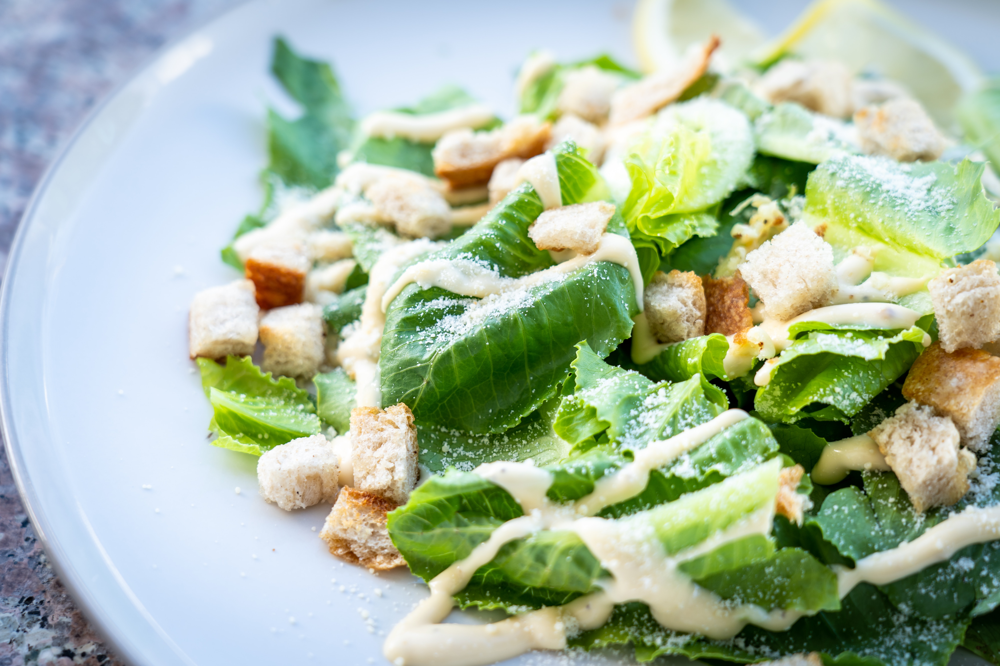

the caesar salad
this is an unbelievable, restaurant-quality, creamy caesar salad
dressing that will make you swear off of anything store-bought again.
great for your classic caesar salad, or as a dip for all kinds of
veggies. will NOT disappoint! to serve, toss with chopped romaine in a
salad bowl and shave Parmesan cheese on top of salad; season with
salt, black pepper, and a squeeze of fresh lemon juice.
ingredients:
- 2 anchovy fillets
- 2 cloves garlic, chopped, or to taste
- 1 cup mayonnaise
- ⅓ cup grated Parmesan cheese
- ¼ cup half-and-half
- 2 tablespoons fresh lemon juice
- 1 tablespoon Dijon mustard
- 2 teaspoons worcestershire sauce
how to prepare:
-
combine anchovy fillets with garlic in a food processor and pulse
several times to form a paste. process mayonnaise, parmesan cheese,
half-and-half, lemon juice, dijon mustard, and Worcestershire sauce
with anchovy mixture until dressing is creamy. refrigerate for 1
hour or more before serving.
- serve and enjoy your salad!